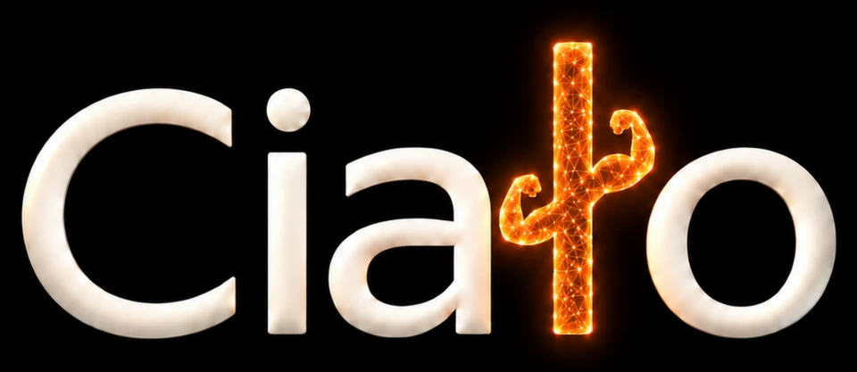
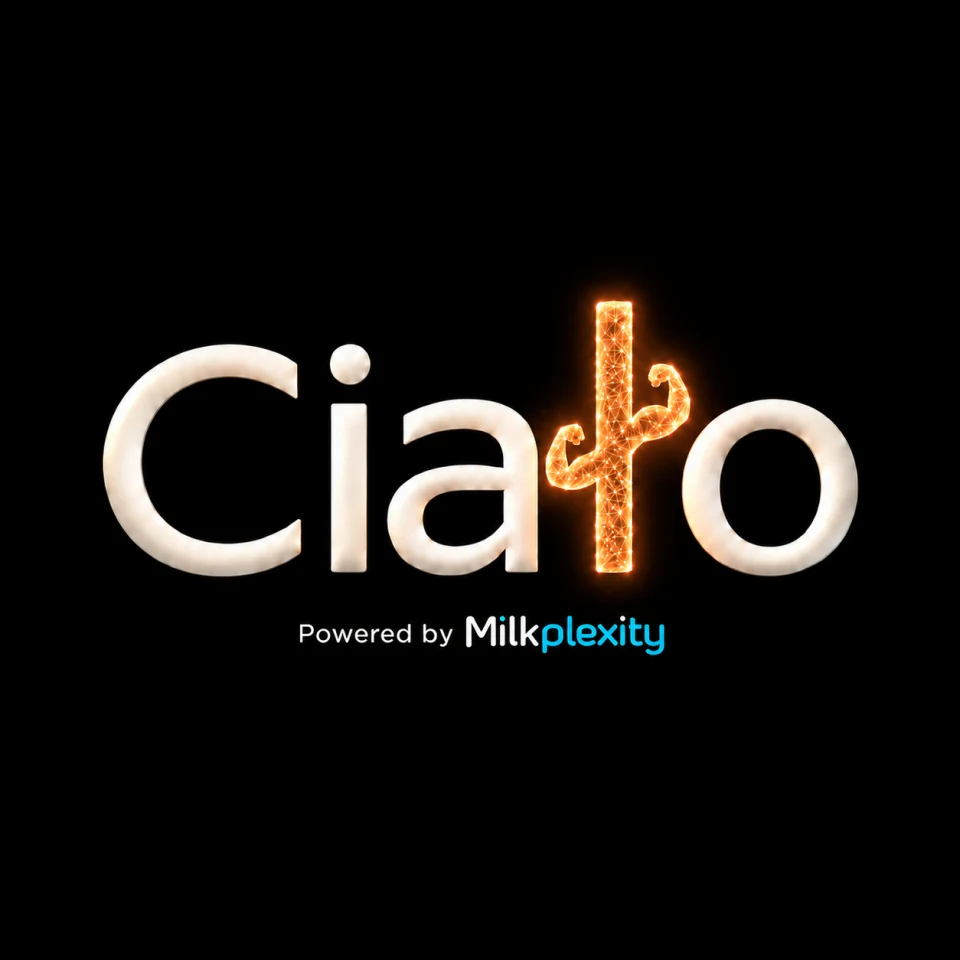
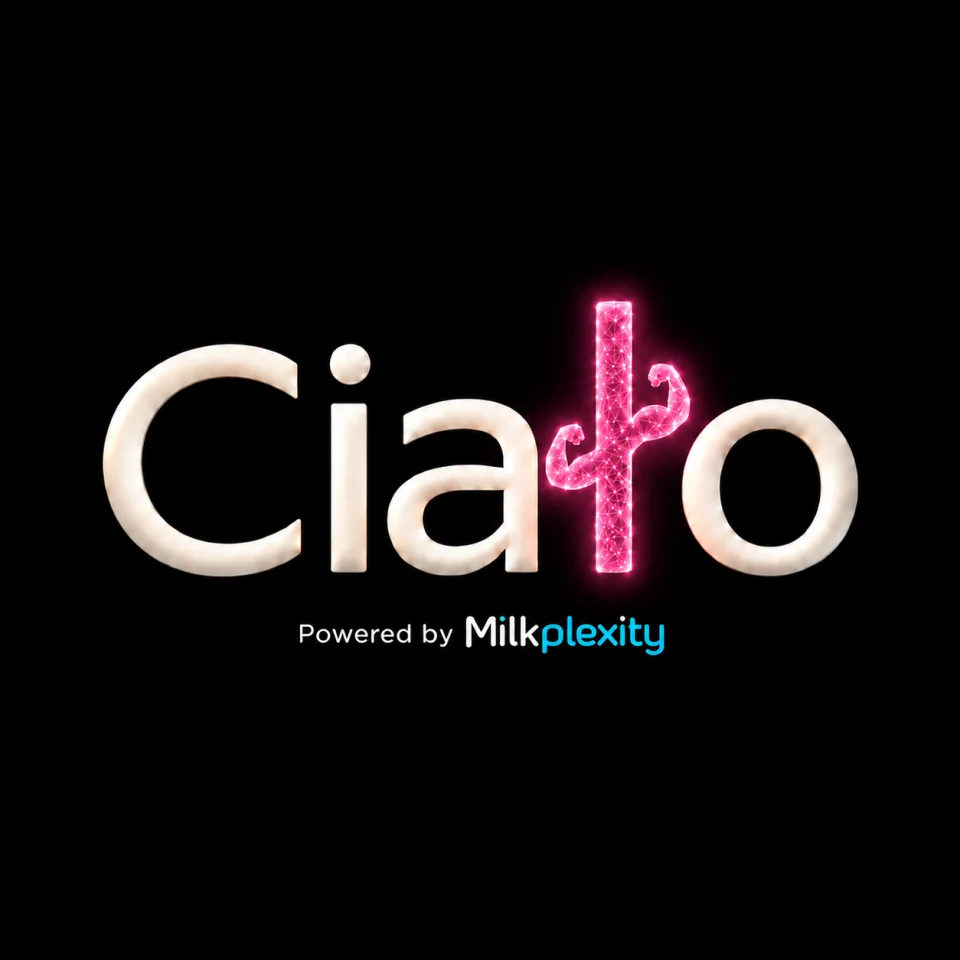
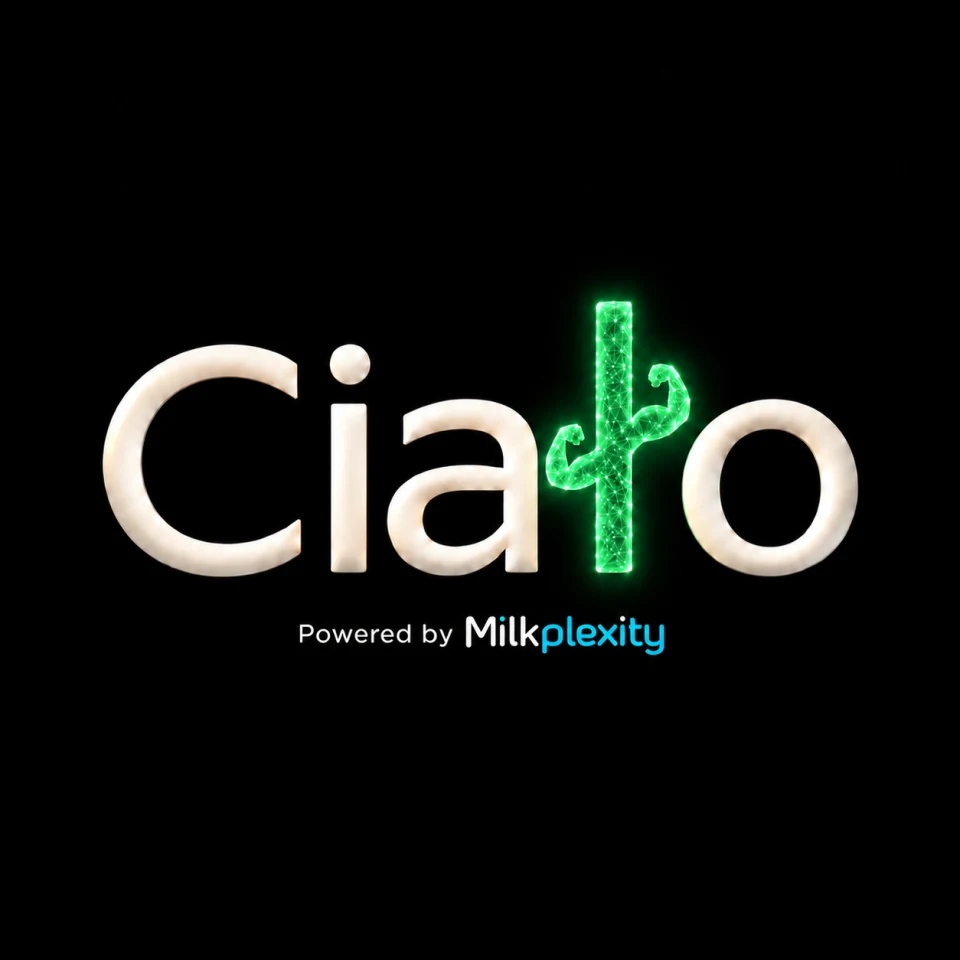
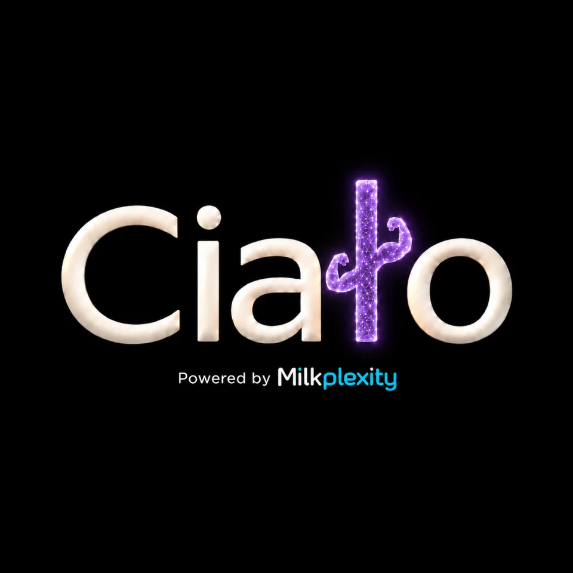
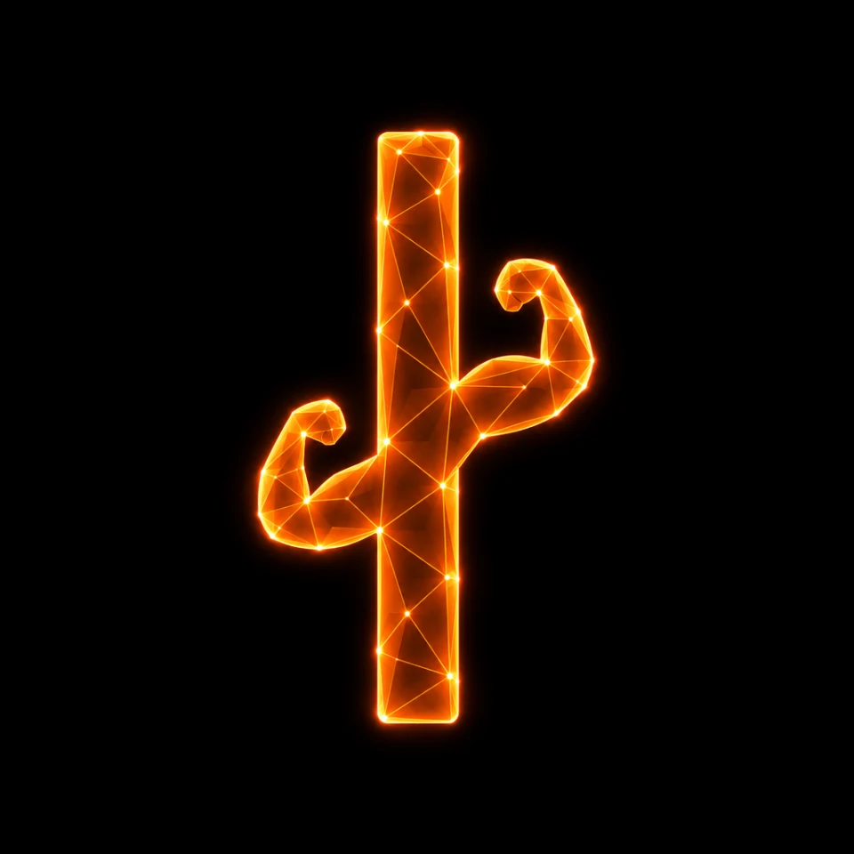
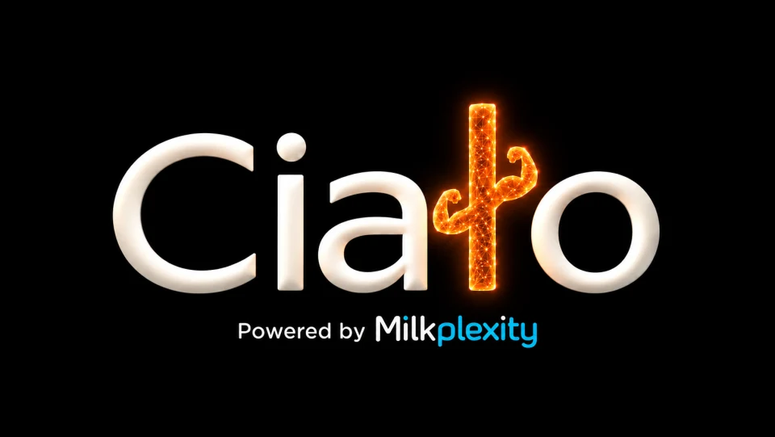
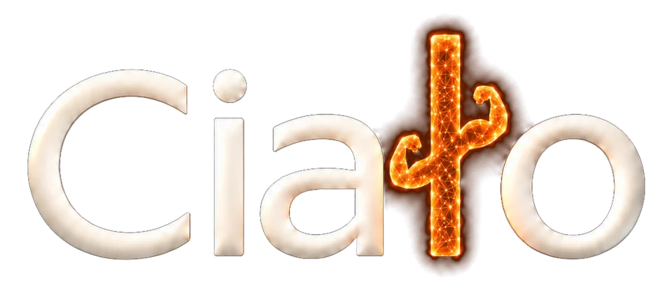

Personal brand identity · 2026
Ciało.
A symbol with strength.
An identity with energy.
{kind=link}

01 / The identity
Built around
a distinctive character.
My own brand identity, expressed through a wordmark, an app icon, and a family of color and motion studies. The sculptural ł gives Ciało its signature: a strong silhouette with light, depth, and detail.
02 / The symbol
One form. Three expressions.
Silhouette, sculptural detail,
and a network of light.
{kind=link}
{kind=link}
{kind=link}
03 / In motion
An identity that moves.
Play the original animation
and explore its movement.
Video version & original files
{kind=link}
04 / Color studies
Same character.
Different energy.
Explore five expressions
of the Ciało identity.
{kind=link}

Choose an expression
Amber
The same pearlescent wordmark and wireframe symbol, from warm amber to electric violet.
View every color study
{kind=link}
{kind=link}

{kind=link}

{kind=link}

05 / Across formats
From icon to signature.
{kind=link}

{kind=link}

Original transparent header export

Projects & opportunities
Have a project
or a role in mind?
Tell me what you’re working on. I’m interested in creative collaborations, brand projects, and opportunities to join a team.